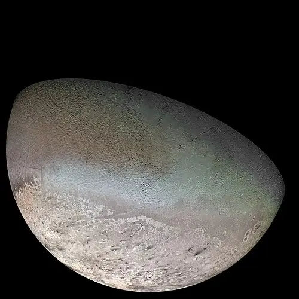

Tritão - Lua de Netuno

Introdução e História
Tritão é a maior lua de Netuno e uma das mais fascinantes do Sistema Solar, descoberta em 10 de outubro de 1846 pelo astrônomo William Lassell, apenas 17 dias após a descoberta do próprio planeta Netuno.
Ao contrário da maioria das grandes luas, Tritão orbita Netuno em sentido retrógrado — ou seja, na direção oposta à rotação do planeta — sugerindo que ele não se formou junto com o planeta, mas sim foi capturado pela gravidade de Netuno em algum momento muito antigo.
Características Físicas: Diâmetro, Massa e Órbita
Tritão tem cerca de 2.710 km de diâmetro, sendo a maior lua de Netuno e a sétima maior do Sistema Solar.
Ele orbita Netuno com uma rotação sincronizada — sempre com um mesmo lado voltado para o planeta — e completa uma volta em cerca de 5,9 dias terrestres.
Sua órbita retrógrada e sua densidade relativamente alta sugerem que Tritão se originou no Cinturão de Kuiper e foi capturado pela gravidade de Netuno.
Geologia
Tritão possui uma superfície gelada e complexa, com vastas planícies, terrenos irregulares e características únicas que sugerem processos geológicos ativos.
Durante o sobrevoo da sonda Voyager 2 em 1989, foram observados depósitos de nitrogênio congelado, áreas de gelo de metano e dióxido de carbono, além de características semelhantes a terrenos de vulcões de gelo (criovulcanismo).
Missões Espaciais
Tritão foi visitado apenas uma vez por uma missão espacial: a sonda Voyager 2, que realizou um sobrevoo histórico em 1989, fornecendo as imagens mais detalhadas e dados sobre sua superfície e atmosfera.
A Voyager 2 é até hoje o único veículo humano a explorar diretamente o sistema de Netuno, revelando a geologia e atmosfera de Tritão.
Atmosfera e Exosfera
Tritão possui uma atmosfera tênue, composta principalmente de nitrogênio com pequenas quantidades de metano e monóxido de carbono, detectada durante o sobrevoo da Voyager 2.
Apesar de extremamente fina, essa atmosfera já apresenta estruturas de neblina e variações sazonais ligadas à sublimação dos gelos da superfície.
Potencial de Habitabilidade
- Água Líquida: A presença de um possível oceano subterrâneo não está confirmada.
- Fonte de Energia: Energia interna limitada, mas evidências de atividade geológica no passado.
- Ingredientes Químicos: Composição de gelo, nitrogênio e outros voláteis.
De forma geral, Tritão não é considerado um dos principais candidatos à vida, mas continua sendo objeto de estudo pela sua origem e atividade geológica.
Curiosidades
Tritão é um dos poucos corpos do Sistema Solar onde foram observados gêiseres ou atividade criovulcânica, evidência de processos internos pouco comuns para uma lua tão fria.
Com uma temperatura superficial extremamente baixa (~−235 °C), seu gelo de nitrogênio é tão frio que age quase como rocha.
Por sua órbita retrógrada, Tritão está lentamente se aproximando de Netuno e pode, teoricamente, colidir com o planeta ou se desintegrar em um futuro muito distante.
Origem do Nome
Tritão recebeu seu nome na mitologia grega, inspirado em Triton, filho de Poseidon (o equivalente ao deus romano Netuno), uma figura frequentemente representada como um mensageiro do mar e guardião das profundezas.
Na tradição mitológica, Triton era descrito como metade homem e metade peixe, segurando uma concha de tritão, cujo som comandava as ondas e calava tempestades — uma imagem poderosa ligada à ideia de um mundo distante e misterioso.
A escolha desse nome segue a tradição de nomear as luas dos planetas gigantes com personagens associados aos deuses do mar e dos céus, refletindo a conexão histórica entre a observação astronômica e a mitologia clássica.
Referências
- NASA Science. Triton Overview. Disponível em: https://science.nasa.gov/neptune/moons/triton/. Acesso em: 26 dez. 2025.
- Wikipedia. Tritão (lua). Disponível em: https://pt.wikipedia.org/wiki/Triton_(moon). Acesso em: 26 dez. 2025.